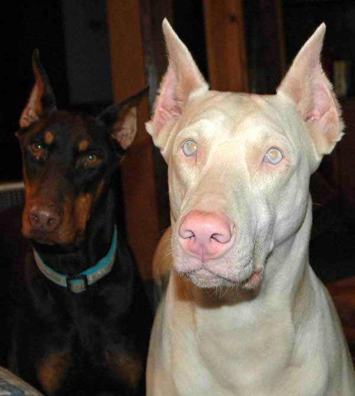

Доберма – тази порода е известна със своята интелигентност, лоялност и енергичност, но също така изисква специфична грижа и внимание. Вашето бъдещо куче е не само красиво и благородно, но и изисква от вас да сте подготвени и информирани.

Доберманите са порода, която ви предизвиква да бъдете по-добри стопани, да се научите на нови умения и да
се адаптирате към техните нужди. Те не са просто домашни любимци, те са част от семейството,
които изискват вашата любов, внимание и разбиране.
В тази статия ще ви предоставим всичката необходима информация, която ще ви помогне да разберете какво
означава да сте стопанин на Доберман. Ще разгледаме всичко от характеристиките на породата до най-добрите
практики за отглеждане и грижа за вашето куче.
Доберманите са големи кучета с високи енергийни нива и изискват много упражнения, за да се избегне разрушителното поведение. Дейностите трябва да варират, за да ги интересуват, тъй като те са интелигентни кучета, които се отегчават лесно. Те се радват на дейности на открито и ще се радват да придружават хората на разходки, писти, походи и разходки с велосипед.
В миналото Доберманите били отглеждани като работещи кучета, най- вече като кучета пазачи, полицейски кучета, военни пазачи, медицински кучета и като част от екипи за търсене и спасяване. Това желание за работа все още е дълбоко закотвено в съзнанието на тези кучета.
Това желание за работа означава, че тази порода също се нуждае от много психична стимулация. Състезанията по ловкост и аджилити дават отлична възможност за Доберманит е да упражняват и използват своите мисловни и физически способности едновременно. Тази п орода не е създадена да бъде мързелива обитателка на дивана. Доберман е едно от най-интелигентните кучета в света.